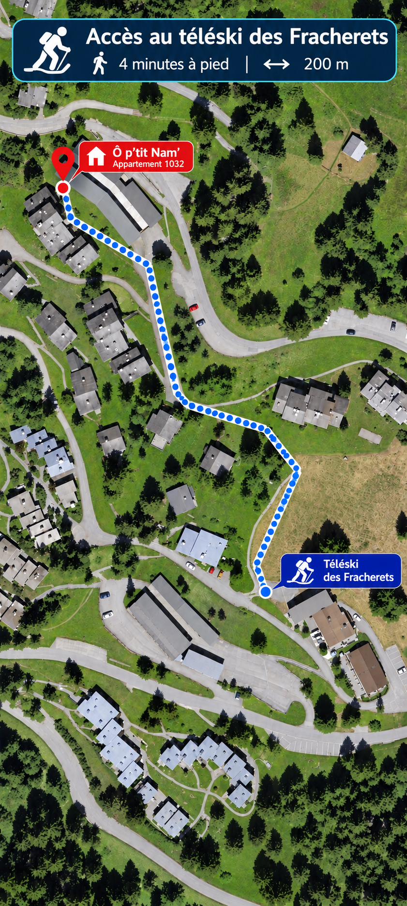

⌃ L'ALPE DES CHAUXGRYON
Accès au téléski des Fracherets
Depuis Ô p’tit Nam’ · à pied

4 minutes à pied · 200 mSuivez le pointillé bleu sur la carte, depuis la résidence jusqu’à l’accès au téléski des Fracherets.
En hiver, vérifiez que le passage est praticable et déneigé.
Plan fourni par le propriétaire · pointillé bleu à suivre
← Retour aux infos pratiques
NATURE | DÉTENTE | ÉVASION